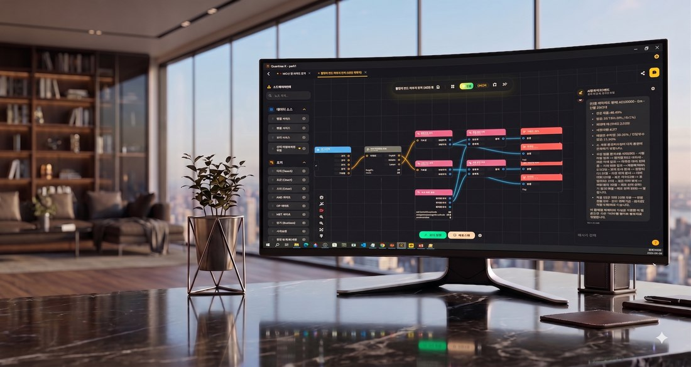
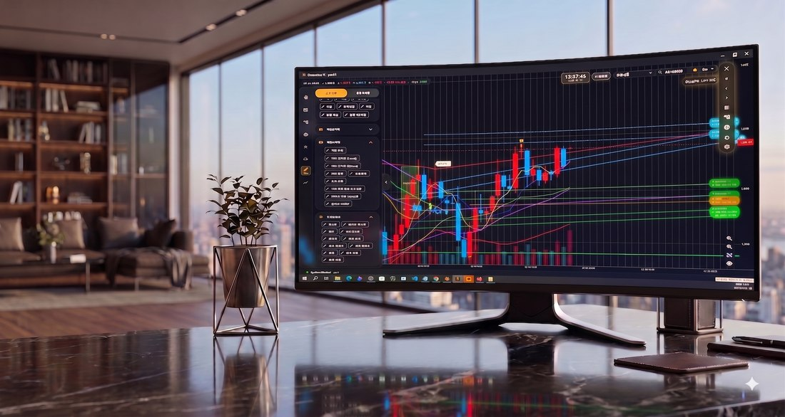
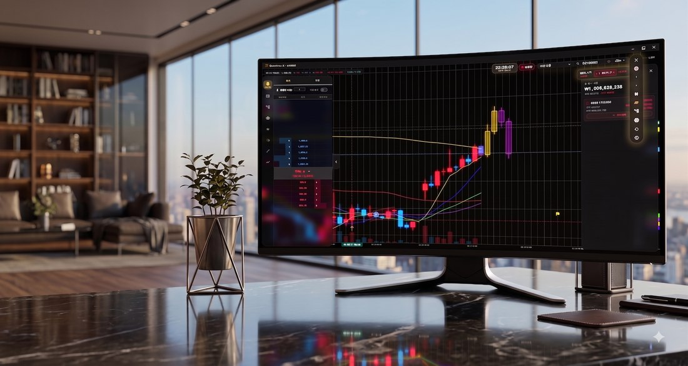
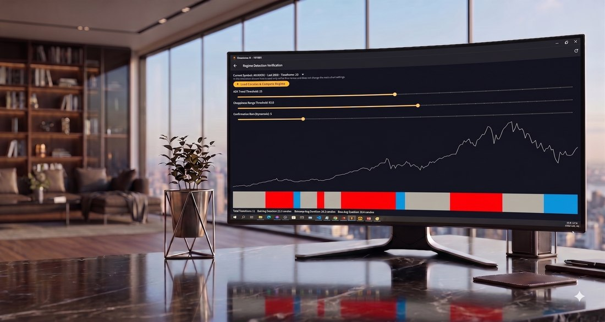
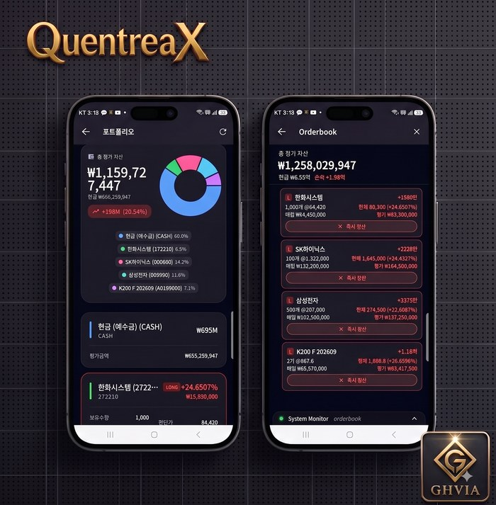

각 기능은 독립적으로도, 조합해서도 사용할 수 있습니다.

"내가 생각한 매매전략을 직접 만들고 싶다면"
퀀트라엑스의 전략빌더에 있는 AI에게 자연어로 요청하면 바로 노드로 연결하여 매매전략을 설계합니다. 조건 설정부터 진입·청산·손절·익절까지, 내가 생각한 로직을 직접 전략으로 만들 수 있습니다.

"차트를 보면서 직관적으로 매매하고 싶다면"
차트 위에 진입, 익절, 손절 가격을 직접 그어보세요. 복잡한 설정 없이 내가 그린 매매선을 기준으로 자동 실행할 수 있습니다.

다음 캔들의 흐름을 AI가 예측해 차트에 표시합니다. 5개짜리 통계 기반 예측은 5회 반복 후 다수결로 최종안을 뽑아 신뢰도를 높였고, 1개짜리 예측은 진행 중인 봉의 마감가와 다음 봉의 흐름을 함께 예측해 시장의 가능성을 분석합니다.
재미나이·클로드·GPT 세 개의 AI가 각각 다음 캔들을 독립적으로 예측하고, 방향이 서로 일치할 때만 매매에 반영합니다. 하나의 AI에만 의존하지 않고 서로 다른 AI가 서로를 검증하는 구조입니다.
재미나이·클로드·GPT 중 원하는 엔진을 선택해 호가창과 시세를 분석시키고, 실시간으로 매매 판단을 실행합니다. 신호를 그대로 따를지, 반전시킬지, 시장 국면에 따라 자동으로 바꿀지도 설정할 수 있습니다.

시장이 상승·하락·횡보 중 어느 국면인지 지표(추세강도·변동성)로 스스로 판단해, 국면에 맞는 전략으로 자동 전환합니다. 사람이 장을 보고 있지 않아도 국면이 바뀌면 매매 방식도 따라 바뀝니다.
계좌 화면을 열어두지 않아도 여러 계좌의 전략·매매선·AI봇이 백그라운드에서 계속 동작합니다. 계좌별로 실행 중인 전략과 손익을 한 화면에서 모아볼 수 있습니다.

PC뿐 아니라 안드로이드 앱으로도 매매 현황 확인과 자동매매 운용이 가능합니다.